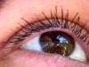

graham.txt
 abstraction
abstraction topic, figure, difference, real, real, certainly, almost, effect, almost, knew, important, learn, science, why, reasons, problems, importance, idea, research, idea, concept, model, research, history, history, research, subject, tends, consequence, real, difference, real, real, idea, mistakenly, believed, fact, cause, effect, may, truth, think, real, problem, topic, chosen, sure, supposed, different, why, understand, concluding, certainly, know, them, something, true, truth, may, something, understand, real, history, something, different, difference, something, figure, something, figure, know, may, real, figure, why, why, think, ideas, them, thought, them, why, them, theory, real, thinking, something, think, tend, conclude, tend, something, certain, something, know, truth, know, supposed, truth, choose, know, ideas, certain, ideas, thought, thought, real, thought, real, something, know, information, them, them, different, information, know, know, thought, knew, fact, effects, thought, thought, topic, probably, example, judge, them, knows, topics, thought, think, guess, possible, exception, deliberately, them, important, certain, why, think, difference, something, learn, learn, learning, history, history, learn, facts, knowledge, established, think, figured, figured, mistaken, may, why, why, why, example, why, why, sure, axiom, example, fact, mistake, thought, something, why, ideas, why, ideas, may, them, tend, thoughts, may, themselves, mistaken, mistaken, may, different, different, example, history, history, history, history, important, history, ideas, thought, supposed, important, supposed, something, something, something, tends, example, surely, something, purposes, something, plan, believe, supposed, learns, important, them, judged, them, them, problem, judged, may, certainly, something, thinking, science, cause, may, scientific, history, logic, considered, important, subject, truth, meant, true
 order
order series, classics, system, classical, classics, formally, classical, form, form, precisely, form, balanced, simple, normans, normans, normandy, normans, norman, classes, gradually, gradualness, gradually, system, precisely, classical, classical
 social_behavior
social_behavior introductory, say, teach, teaching, answer, call, visited, teachers, answer, answer, offered, taught, teach, taught, taught, taught, taught, teaching, imitate, education, imitations, imitating, imitating, persuasively, discussion, treat, admit, teach, said, tell, remarks, convincing, convincing, answers, talk, explained, conversation, saying, convincing, convincing, convince, persuade, call, called, helps, helps, explaining, inviting, says, says, answers, promising, tell, tell, following, dialogue, conversation, conversation, answer, said, follow, asked, information, ask, ask, information, say, appealing, called, mentions, called, help, asking, ask, ask, helpful, helps, talked, pleased, tell, pleasing, social, treat, describe, confidence, follow, conversation, answer, advice, told, taught, approved, allowed, said, say, says, teachers, say, education, speak, thanks
 instrumental_behavior
instrumental_behavior try, students, study, students, result, work, study, acquired, gained, find, study, study, work, studying, working, study, sown, component, students, student, work, students, work, make, make, study, built, job, try, aim, attempts, trying, reach, try, attempt, try, find, make, results, trying, menderes, reach, work, found, work, find, make, machine, make, aim, found, recording, find, work, use, working, find, working, working, bought, make, makes, collecting, used, find, find, find, find, achieving, pay, aiming, make, deliver, using, reproduce, trying, find, collecting, make, find, study, pickles, study, study, studying, make, paying, working, find, make, used, constructive, used, job, make, pick, finished, studies, study, study
 restraint
restraint catch, resistance, required, required, necessary, must, must, obliged, obstacles, prescribed, stop, stop, must, must, catch, strictly
 moral_imperative
moral_imperative should, should, should, principle, ought, law, legal, principle, should, should, right, ought, dutifully, should, principle, should, should, should, should, should, customers, right, should, should, should, should, should, right, should, legal
 timelessness
timelessness centuries, centuries, century, century, century, centuries
 glory
glory great, prestige, wonder, principle, principle, great, principle, extremely, conquered, conquered, wonder, empire, rich, richer, wealth, admirari, proud, extreme, golden, golden
 vision
color, color, painter, see, notice, see, complex, looking, looks, saw, looking, color, yellow, look, yellow, notice, observant, see, see, observation, seen, notice, notice, see, notice, look, paintings, look, see, looks, look, looking, painting, see, gray, gazette
 concreteness
concreteness side, at, between, over, pointless, back, at, backbone, at, at, tipped, at, along, at, long, closest, pointless, out, between, position, out, long, at, side, at, at, position, position, at, where, over, at, near, at, back, far, out, out, position, open, inside, out, far, out, over, apartment, out, off, out, outside, toward, at, long, where, straight, across, over, place, out, at, places, backtrack, at, point, out, back, over, central, over, side, off, along, long, back, places, out, out, place, across, pointed, out, overall, out, out, at, point, at, at, at, at, front, out, extent, at, southern, at, squared, out, backwards, out, along, between, pointless, at, at, situations, where, between, among, far, among, out, separate, longer, off, back, back, over, over, at, at, insiders, insiders, between, curve, where, at, at, back, where, at, where, far, points, out, outside, curves
 water
water river, swampy, river, sea, river's, river, river, river, river
 anxiety
anxiety cares, terror, afraid, avoid
 height
height high, high, high, high, high, growing, spirit, high, high, grow, above, grown, grows
 diffusion
diffusion mistakenly, vague, mistaken, mistake, mistaken, mistaken
 temporal_references
temporal_references years, once, earlier, every, during, ancient, momentum, ancient, time, then, ancient, time, till, now, when, then, now, decades, now, years, ago, then, often, early, present-day, when, when, often, again, time, when, when, then, then, sometimes, already, sometimes, already, sometimes, then, time, when, already, when, now, then, now, time, now, time, when, dates, once, when, time, when, now, older, when, when, year, when, everyone, while, time, when, when, year, old, when, during, years, years, when, date, sudden, years, whence
 aggression
aggression argument, arguing, disputation, argument, dispute, strike, conflict, bother, arguing, cutting, arguing, controversial, accused, cut, opposite, beaten, opposite, swords, blade, swords, breaking, blade, disputes
 passivity
passivity slower, drift, lies
 odor
odor breath, noses
 depth
depth deeply, under, lowly, underneath
 random_movement
random_movement spread, whirl, spread
 unknown
unknown mystery, oddly, odd, unknown
 soft
soft software
 fire
fire solar, search
 general_sensation
general_sensation luxury, baskin-robbins, attention, attention, attention, attention
 orality
orality dessert, tea, food, eaten, sucked, fast, food, lemon, cream, salt, cream, fast, food, fruitful, banana, bacon, cheese, foods, bacon
 cold
cold ice, north, cool, cool, coolness
introductory, say, teach, teaching, answer, call, visited, teachers, answer, answer, offered, taught, teach, taught, taught, taught, taught, teaching, imitate, education, imitations, imitating, imitating, persuasively, discussion, treat, admit, teach, said, tell, remarks, convincing, convincing, answers, talk, explained, conversation, saying, convincing, convincing, convince, persuade, call, called, helps, helps, explaining, inviting, says, says, answers, promising, tell, tell, following, dialogue, conversation, conversation, answer, said, follow, asked, information, ask, ask, information, say, appealing, called, mentions, called, help, asking, ask, ask, helpful, helps, talked, pleased, tell, pleasing, social, treat, describe, confidence, follow, conversation, answer, advice, told, taught, approved, allowed, said, say, says, teachers, say, education, speak, thanks